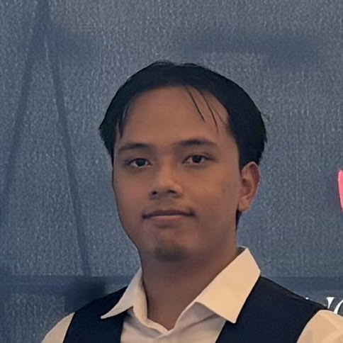

Open to job offers · Graduating 2027
Software engineer · NYU CS · builder of things that occasionally work on the first try.
Scroll to explore01 — About
I'm a developer who cares about clean code, rigorous systems, and pushing the boundaries of what machines can perceive. My research interest is in passive NLOS imaging — using ML to reconstruct scenes that are literally hidden from view.
02 — Skills
03 — Projects
High-Speed Research Network (HSRN)
Audio Systems Team Lead • NYU Tandon
Refactored a legacy distributed real-time audio receiver
from a dual-stream architecture into a scalable
multi-sender pipeline capable of supporting synchronized
audio from globally distributed performers.
Designed lock-free audio processing pipelines with
per-sender jitter buffers, dynamic stream subscription,
and real-time audio mixing, allowing new performers
to join without interrupting active sessions.
Resolved long-standing plugin lifecycle crashes,
simplified stream management, and established a
maintainable architecture that significantly improved
reliability for large-scale collaborative live audio
applications.
M-Fly
Autonomous Aircraft Computer Vision Platform
Collaboratively developed software for an autonomous
aircraft capable of terrain mapping, object detection,
object classification, and payload delivery using
computer vision and machine learning.
Integrated OpenCV, YOLOv7, and PaddleOCR into a unified
perception pipeline that enabled the aircraft to identify
targets and navigate using visual information collected
during flight.
Worked closely with hardware and software teams to resolve
integration challenges, establishing structured engineering
discussions that improved cross-team decision making and
project execution.
Search Engine
Built a scalable search engine in C++ using information
retrieval techniques including TF-IDF and PageRank to rank
and retrieve relevant web pages.
Implemented a MapReduce indexing pipeline that processed
large collections of web pages, generating inverted indexes
mapping words to documents while tracking term frequency
statistics for ranking.
Developed a REST API using Flask and SQLite to serve
search results as JSON and created a web-based frontend
for querying indexed content.
04 — Personal Projects
PNG VTuber Overlay
Built a lightweight PNG VTuber system
that reacts to keyboard input and mouse
movement using a browser-based interface.
Supports custom expressions triggered by
key presses, dynamic mouse-following
overlays, and can be packaged as a
standalone desktop application.
Originally created as a simple alternative
to Live2D-style avatars for streaming and
online content creation.
05 — Contact